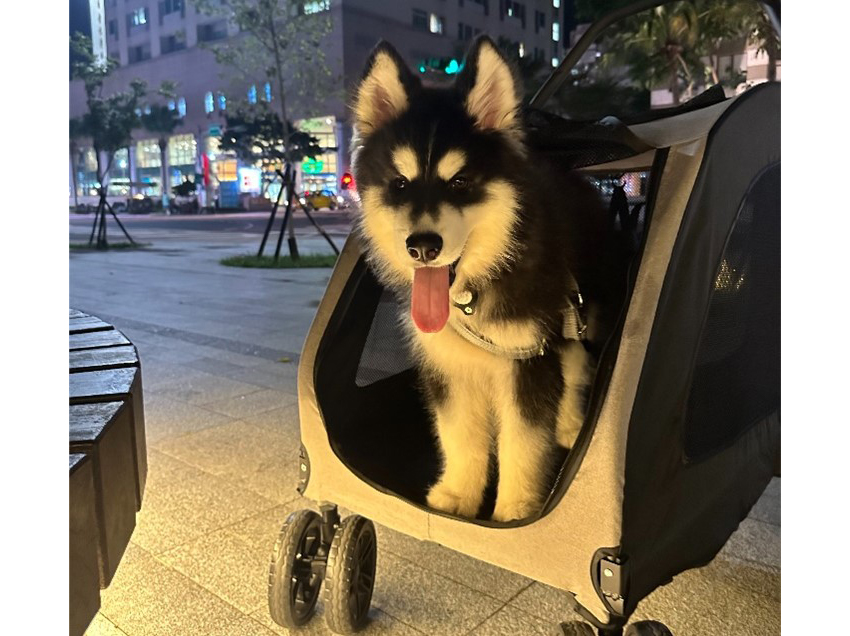

一段與帥哈的幸福相遇
馮文彬│認證技術處 \ 安規部
從小的夢想終於在去年7月遇見了Ricky的時候實現了。這不是一個簡單的決定，尤其是對我這種新手來說。然而，在我看到他的那一刻，我的心就完全被他俘虜了。
在那之前，我刷過了無數的寵物影片，去了幾趟犬舍了解飼育環境，去了好多次的寵物展，就在等著迎接小傢伙回家的那天。他是兄弟姊妹裡面最活潑好動的，剛吃飽就想爬出籠子找別人玩，對外界充滿好奇心。跟他互動了一陣子，就決定是他了。準備了一週後，順利把他接回了家，路上不吵不鬧，讓我相信他就是個天使寶寶。
|  |
他還真的不二，2天學會定點上廁所，4天學會坐下等吃飯。還沒打完疫苗，我就把他裝進包包帶出去逛街，後來買了個推車讓他舒舒服服當少爺。從小就見過世面，長大後異常勇敢，救護車、煙花、爆竹對他來說根本小case，被大狗兇也沒在怕。
一天天的長大，從原本5kg變成現在27kg的帥哈（不是二哈），每天都有不同的趣事，有時候也讓人哭笑不得。每每看到他那天真無邪的眼神，偶爾的歪頭殺，下班後興奮的迎接我，都會感到無比幸福和滿足。而我也從原本的宅在家睡到自然醒，變成每天的出門散步，假日的到處溜達，過得無比充實。小屁孩成了我生命中珍貴的一部分，期待著未來與他渡過的每一刻。